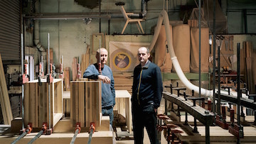
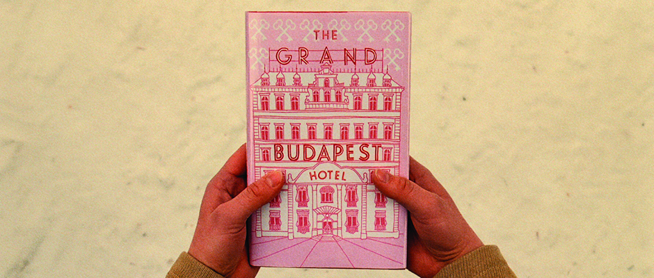

John and Simon
Sept. 24th 2015Meet John Barley and Simon Hunter, two of our craftsmen at the TWNY studio.
read more →

Annie Atkins on Designing for The Grand Budapest Hotel
Sept. 24th 2015As graphic designer on the film, Annie’s role involved planning and creating every single item that would be designed in real life.
read more →